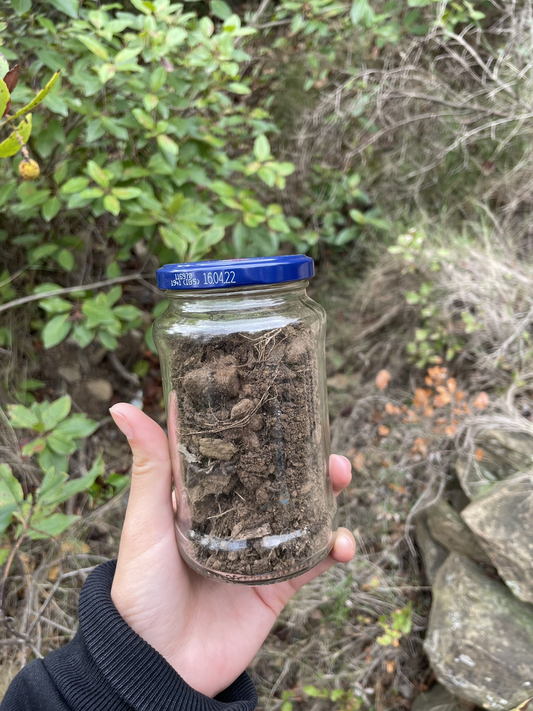

Week 1. Introduction.
During this first week we got to know each other and the master's program. We learned about our own personal present skills and the future ones we want to obtain as well as our classmate's ones.
Read More
October 16, 2021

Up there we found a conservation group dedicated to observing birds and analiziing their migration paths between other things like also educating people. There is also a dog shelter which takes volunteers for walking some of their dogs. I gotta say I'm impressed with the sense of community in Barcelona and iniciatives that definitely help us take care of the environment. So maybe one solution is to learn about the environment you're about to visit and see what is harmful and what not, what can you do to help that place while you visit it.
Last Saturday we volunteered for Connecthort and had lots of fun using biomaterials to build a house. I guess this is also part of starting to change habits and ways of impacting the world we live in. For the next steps of this project I would like to contact the team at six n five. They are a group of creatives doing digital visualizations of natural escapes. I haven't figured out how exactly we can collaborate but I have a feeling we can do something related to getting people's interest back into taking care of nature. I also want to try experimenting with natural components growing on their own and analyze what exactly is it that we can do to help nature regenerate or what this word actually means in nature. Is it better to leave it on its own or is there something we humans can contribute towards it. For this I want to grow my biology skills and learn about microorganisms.
I really enjoyed getting involved in community projects which work together towards a common goal which also has sustainable goals in mind.
In this way you realize that there are a lot of things you can do to help or change your environment and that there's a alot of people out there that also want to collaborate to find new ways of coexisting with nature.
During this first week we got to know each other and the master's program. We learned about our own personal present skills and the future ones we want to obtain as well as our classmate's ones.
Read More
Week 3 was the introduction to biology. We learnt about microorganisms all around us and the composition behind them from cells to systems.
Read More
Agriculture Zero was a glimpse of what the agriculture world is. We went from the basics to the deeps like analyzing soil.
Read More